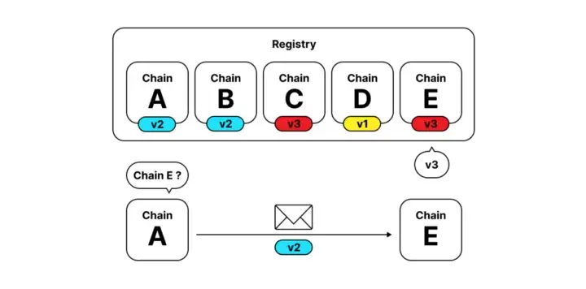

<!DOCTYPE html>
<html lang="en">

<head>
  <meta charset="utf-8" />
  <meta name="viewport" content="width=device-width, initial-scale=1.0, maximum-scale=1.0, user-scalable=no" />

  <title>Writing, Sending, and Execution of XCM</title>
  <link rel="shortcut icon" href="./../../../assets/favicon.ico" />
  <link rel="stylesheet" href="./../../../dist/reset.css" />
  <link rel="stylesheet" href="./../../../dist/reveal.css" />
  <link rel="stylesheet" href="./../../../assets/styles/PBA-theme.css" id="theme" />
  <link rel="stylesheet" href="./../../../css/highlight/shades-of-purple.css" />

  <link rel="stylesheet" href="./../../.././assets/styles/custom-classes.css" />

</head>

<body class="site">
  <header class="site-header">
    <!-- This logo is a link only on the watching server, not the production build -->
      
  </header>
  <main class="reveal">
    <article class="slides">
      <section  data-markdown><script type="text/template">

# Writing, Sending, and Execution of XCM
</script></section><section  data-markdown><script type="text/template">
## _At the end of this lecture, you will be able to:_

- Construct XCMs via a combination of basic instructions
- Contribute to the discussions on upcoming changes to the XCM format
- Understand the basic structure and architecture behind cross-consensus asset transfers
</script></section><section  data-markdown><script type="text/template">
## XCM is an evolving format!

We have just merged V3!

<aside class="notes"><p>XCM is a work-in-progress, versioned format!
A goal of this module is to make you capable of contributing to it.</p>
<p>TODO: activity to look at proposed but not finalized addition (something like a ZK instruction set)</p>
</aside></script></section><section  data-markdown><script type="text/template">
## The XCM format

#### https://github.com/paritytech/xcm-format

The specification document for the XCM format
</script></section><section  data-markdown><script type="text/template">
## XCM Specification Main Sections

<pba-flex center>

1. [Basic Top-Level Format](#basic-top-level-format)
1. XCVM Registers\*
1. [Basic XCVM Operation](#basic-top-level-format)
1. [XCVM Instruction Set](#instruction)
1. Universal Asset Identifiers<br/>
   (`MultiAsset`)\*
1. Universal Consensus Location Identifiers<br/>
   (`MultiLocation`)\*
1. [XCM Error Types](#xcm-errors)

</pba-flex>

_\*covered in lesson 1 and 2_

<aside class="notes"><ol>
<li>Talks about terms used in XCM, the entire architecture around XCM (namely the communication model and XCVM)</li>
<li>Is about the <code>VersionedXcm</code> type and how XCM versioning is done</li>
<li>All registers (states) of the XCVM</li>
<li>The steps undertaken by the XCVM to execute one single instruction</li>
<li>All instructions and their semantics, the registers that they may change, and their behavior</li>
<li>The kind of assets that can be represented using <code>MultiAsset</code></li>
<li>How locations are represented in XCM via <code>MultiLocation</code></li>
<li>The kinds of errors that one can encounter during the execution of an XCM</li>
</ol>
</aside></script></section><section  data-markdown><script type="text/template">
## Basic Top-Level Format

```rust
pub enum VersionedXcm {
    /*
    Obsolete versions
    #[codec(index = 0)]
    V0(v0::Xcm),
    #[codec(index = 1)]
    V1(v1::Xcm),
    */
    #[codec(index = 2)]
    V2(v2::Xcm),
    #[codec(index = 3)]
    V3(v3::Xcm),
}
```

<aside class="notes"><p>All the XCM format documentation does is state that the SCALE encoding index for the enums are in <code>u8</code>, and is defined by the <code>#[codec(index)]</code> attribute as we see in the code.
It also concretely states that in XCMv2, the <code>v2::Xcm</code> struct is simply defined as a wrapper type around a <code>Vec&lt;Instruction&gt;</code>, where <code>Instruction</code> is the enum representing the XCM instruction set that exists in version 2.</p>
</aside></script></section><section  data-markdown><script type="text/template">
## Kinds of XCM Instructions Recap

Four kinds of XCM instructions:

<pba-flex center>

- Instruction
- Trusted Indication
- Information
- System Notification

<aside class="notes"><p>Instruction - instructions that result in a state change in the local consensus system, or instruct the local consensus system to achieve some desired behavior.
Trusted Indication - instructions that notify the recipient that the sender wants the recipient to trust that the sender has performed some sort of (usually) state-altering action.
Information - instructions that report information that the recipient has requested for.
System Notification - instructions that notify about transport protocol events.
These instructions usually originate from the relay chain.</p>
</aside></script></section><section  data-markdown><script type="text/template">
## Instruction

Split into a few categories.
Instructions that:

<pba-flex center>

- **handle assets**
- changes the state of the XCVM registers
- report information back to the sender
- deal with version negotiation
- assert a certain condition of the XCVM
- relates to weight fee payment
- interact with other subsystems of the blockchain
</script></section><section  data-markdown><script type="text/template">
## Instruction

<pba-flex center>

handle assets:

- handle an Asset local assets only
- transfer an Asset assets to another consensus system
- deal an Asset with asset locking
- burn an Asset, recover or exchange specified assets
</script></section><section  data-markdown><script type="text/template">
## Asset Instructions

```rust
enum Instruction {
    // instructions that handle local assets only
    WithdrawAsset(MultiAssets),
    DepositAsset { assets: MultiAssetFilter, beneficiary: MultiLocation },
    TransferAsset { assets: MultiAssets, beneficiary: MultiLocation },
    // instructions that transfer assets to another consensus system
    InitiateReserveWithdraw { assets: MultiAssetFilter, reserve: MultiLocation, xcm: Xcm },
    DepositReserveAsset { assets: MultiAssetFilter, dest: MultiLocation, xcm: Xcm },
    TransferReserveAsset { assets: MultiAssets, dest: MultiLocation, xcm: Xcm },
    InitiateTeleport { assets: MultiAssetFilter, dest: MultiLocation, xcm: Xcm },
    // instructions that deal with asset locking
    LockAsset { asset: MultiAsset, unlocker: MultiLocation },
    UnlockAsset { asset: MultiAsset, target: MultiLocation },
    RequestUnlock { asset: MultiAsset, locker: MultiLocation },
    // instructions that burn, recover or exchange specified assets
    BurnAsset(MultiAssets),
    ClaimAsset { assets: MultiAssets, ticket: MultiLocation },
    ExchangeAsset { give: MultiAssetFilter, want: MultiAssets, maximal: bool },
}
```

<aside class="notes"><p>The withdrawal destination is always the holding register if the instruction does not have parameters specifying the beneficiary.
Similarly, the deposit source is always from the holding register.</p>
</aside></script></section><section  data-markdown><script type="text/template">
## Register State Change Instructions

```rust
enum Instruction {
    // instructions that modify the origin register
    AliasOrigin(MultiLocation),
    DescendOrigin(InteriorMultiLocation),
    UniversalOrigin(Junction),
    // instructions that provide additional instructions to execute upon certain conditions
    SetErrorHandler(Xcm),
    SetAppendix(Xcm),
    // instructions that modify the topic register
    SetTopic([u8; 32]),
    // instructions that modify the error register
    Trap(u64),
    // instructions that modify the fees mode register
    SetFeesMode { jit_withdraw: bool },
    // instructions that clears the specified register
    ClearTopic,
    ClearError,
    ClearOrigin,
    ClearTransactStatus,
}
```

<aside class="notes"><p>The origin register is used for access control, hence it has the most number of instructions to modify the state of it.</p>
</aside></script></section><section  data-markdown><script type="text/template">
## Information Reporting Instructions

```rust
enum Instruction {
    ReportError(QueryResponseInfo),
    ReportHolding { response_info: QueryResponseInfo, assets: MultiAssetFilter },
    ReportTransactStatus(QueryResponseInfo),
    QueryPallet { module_name: Vec<u8>, response_info: QueryResponseInfo },
}
```

```rust
pub struct QueryResponseInfo {
    pub destination: MultiLocation,
    pub query_id: QueryId,
    pub max_weight: Weight,
}
```

<aside class="notes"><p>All of these instructions contain a <code>QueryResponseInfo</code> struct, which contains information about the intended destination of the response, the ID of the query, and the maximum weight that the dispatchable call function can use.
The dispatchable call function is an optional operation that XCM author can specify, and is executed upon receiving the response, effectively acting as a lifecycle hook on response.</p>
</aside></script></section><section  data-markdown><script type="text/template">
## Information

```rust
enum Instruction {
    QueryResponse { query_id: QueryId, response: Response, max_weight: Weight, querier: Option<MultiLocation> },
}
```

Offering some requested information that the local system is expecting

<aside class="notes"><p>This instruction is generally safe to execute, the only tidbit here is that the local system may not be expecting the response from the sender.
Therefore, the <code>querier</code> parameter should be checked to ensure that the system that requested the information matches with what is expected.</p>
</aside></script></section><section ><section data-markdown><script type="text/template">
## Version Negotiation Instructions

```rust
enum Instruction {
    SubscribeVersion { query_id: QueryId, max_response_weight: Weight },
    UnsubscribeVersion,
}
```

<aside class="notes"><p>SubscribeVersion - instructs the local system to notify the sender whenever the former has its XCM version upgraded or downgraded.
UnsubscribeVersion - if the sender was previously subscribed to XCM version change notifications for the local system, then this instruction tells the local system to stop notifying the sender on version changes.</p>
</aside></script></section><section data-markdown><script type="text/template">
## 🗣️ XCM Version Negotiation

XCM version negotiation:
<pba-flex center>

1. Chain A sends `SubscribeVersion` to chain B.
1. Chain B responds `QueryResponse` to chain A with the same query_id and max_weight params, and puts the XCM version in the response
1. Chain A stores chain B's supported version on storage.
1. The same procedure happens from chain B to chain A.
1. Communication is established using the highest mutually supported version.
</script></section><section data-markdown><script type="text/template">
## 🗣️ XCM Version Negotiation


</script></section></section><section  data-markdown><script type="text/template">
## Assertion Instructions

```rust
enum Instruction {
    ExpectAsset(MultiAssets),
    ExpectOrigin(Option<MultiLocation>),
    ExpectError(Option<(u32, Error)>),
    ExpectPallet { index: u32, name: Vec<u8>, module_name: Vec<u8>, crate_major: u32, min_crate_number: u32 },
}
```

<aside class="notes"><p>Upon failure, these instructions will throw an <code>ExpectationFalse</code> error.</p>
</aside></script></section><section  data-markdown><script type="text/template">
## Weight Payment Instructions

```rust
enum Instruction {
    RefundSurplus,
    BuyExecution { fee: MultiAsset, weight_limit: WeightLimit },
}
```

<aside class="notes"><p>For consensus systems that require senders to pay for executing XCMs, the <code>BuyExecution</code> instruction specifies which asset will be used to pay for it and the maximum weight that the sender is willing to pay.
One important point to understand is that <code>BuyExecution</code> itself doesn&#39;t contain the fees -- rather, it contains a <code>fee</code> parameter which is used to indicate which of the assets in the holding register can be used to pay for fees.
If the specified asset does not exist in holding, or if the local system does not recognize the <code>fee</code> asset as an eligible asset to pay for fees, then an error is thrown.
If the maximum weight specified by the sender in <code>weight_limit</code> is too low, then the asset up to the limit is deducted from the holding and an error is thrown.</p>
</aside></script></section><section  data-markdown><script type="text/template">
## Subsystem Interaction Instructions

```rust
enum Instruction<Call> {
    ExportMessage { network: NetworkId, destination: InteriorMultiLocation, xcm: Xcm<()> },
    Transact { origin_kind: OriginKind, require_weight_at_most: u64, call: DoubleEncoded<Call> },
}
```

<aside class="notes"><p>We finally introduce the <code>Call</code> type parameter here to indicate where it is actually used within the <code>Instruction</code> enum, which is by the <code>Transact</code> instruction to encode the destination&#39;s runtime <code>Call</code> type.
XCMs that do not make use of the <code>Transact</code> instruction can simply use the <code>()</code> (unit) type as the type parameter to <code>Instruction</code> or <code>Xcm</code>, as evidenced by the <code>xcm</code> field in <code>ExportMessage</code>.
The result of executing the decoded <code>Call</code> parameter in <code>Transact</code> is stored in the transaction status register.</p>
</aside></script></section><section  data-markdown><script type="text/template">
## Trusted Indication

```rust
enum Instruction {
    ReserveAssetDeposited(MultiAssets),
    ReceiveTeleportedAsset(MultiAssets),
    NoteUnlockable { asset: MultiAsset, owner: MultiLocation },
}
```

Sender must have state-altering action _prior_ to sending.

<aside class="notes"><p>ReserveAssetDeposited - The specified assets must have been transferred/deposited to the recipient&#39;s sovereign account on the sender.
The sender is trusted to be acting as a reserve for the specified assets -- such a trust is configured via the <code>IsReserve</code> XCM configuration item on the recipient.
ReceiveTeleportedAsset - The specified assets must have been removed out of total circulation by the sender.
Like <code>ReserveAssetDeposited</code>, the sender needs to configured as a trusted teleport location via <code>IsTeleport</code>.
NoteUnlockable - The specified assets must have been locked by the sender.
The exact definition of &quot;asset locking&quot; is defined by the sender; however this would not cause any incompatibilities as long as &quot;asset unlocking&quot; as defined by the sender undoes the asset lock.</p>
</aside></script></section><section  data-markdown><script type="text/template">
## System Notification

```rust
enum Instruction {
    HrmpNewChannelOpenRequest { sender: u32, max_message_size: u32, max_capacity: u32 },
    HrmpChannelAccepted { recipient: u32 },
    HrmpChannelClosing { initiator: u32, sender: u32, recipient: u32 },
}
```

Handling operations for the underlying transport layer

<aside class="notes"><p>TODO: Get someone familiar with XCMP to comment on whether or not these XCM instructions would still exist when we switch over to XCMP</p>
</aside></script></section><section  data-markdown><script type="text/template">
## Common XCM patterns

```rust
Xcm(vec![
    WithdrawAsset(some_asset), // ReceivedTeleportedAsset(..) | ReserveAssetDeposited(..) | ClaimAsset { .. }
    ClearOrigin, // optional
    BuyExecution { fee: some_asset, weight_limit: Unlimited },
    // ... the rest of the instructions
 ])
```

Most systems expect execution fee payment

<aside class="notes"><p>This pattern is a requirement from the <code>AllowTopPaidExecutionsFrom</code> barrier condition, which we expect most systems that collect fees for execution to use.
The aim of the first instruction is to fill up the holding register with assets, so that <code>BuyExecution</code> can use the holding register to pay for execution.
<code>ClearOrigin</code> is optional here, but if it exists, it is to prevent the subsequent instructions from gaining the privileges of the origin system.</p>
</aside></script></section><section  data-markdown><script type="text/template">
## XCM Errors

Error register - set upon execution failure with `XcmError` variant
Error handler register - if set, the XCM in the register is executed upon error

<aside class="notes"><p>The error register also includes a <code>u32</code> which denotes the instruction index that can be used to locate which XCM instruction failed.
The code in the error handler register can only be used once, otherwise the executor can go into an infinite loop if it too errors during execution.</p>
</aside></script></section><section  data-markdown><script type="text/template">
### XCM with Fees Example

<pba-cols>
<pba-col>

For systems that do require some fee payment though, XCM provides the ability to buy execution resources with assets. Doing so, broadly speaking, consists of three parts:

<pba-flex center>

1. Assets provided
1. Negotiate exchange of assets for compute time (weight)
1. XCM operations will be performed as instructed

</pba-flex>

</pba-col>
<pba-col>

<div style="font-size: smaller">

```rust
WithdrawAsset((Here, 10_000_000_000).into()),
BuyExecution {
    fees: (Here, 10_000_000_000).into(), // MultiAsset
    weight: 3_000_000, // u64
},
DepositAsset {
    assets: All.into(), // MultiAssets
    max_assets: 1,
    beneficiary: Parachain(1000).into(), // MultiLocation
},
```

</pba-col>
</pba-cols>

</div>

<aside class="notes"><p>The first part is managed by one of a number of XCM instructions which provide assets.
We already know one of these (WithdrawAsset), but there are several others which we will see later.
The resultant assets in the Holding Register will of course be used for paying fees associated with executing the XCM.
Any assets not used to pay fees we will be depositing in some destination account.
For our example, we’ll assume that the XCM is happening on the Polkadot Relay Chain and that it’s for 1 DOT (which is 10,000,000,000 indivisible units).
This brings us to the second part, exchanging (some of) these assets for compute time to pay for our XCM.
For this we have the XCM instruction BuyExecution.
Let’s take a look at it:
The first item fees is the amount which should be taken from the Holding Register and used for fee-payment.
It’s technically just the maximum since any unused balance is immediately returned.
The amount that ends up being spent is determined by the interpreting system — fees only limits it and if the interpreting system needs to be paid more for the execution desired, then the BuyExecution instruction will result in error.
The second item specifies an amount of execution time to be purchased.
This should generally be no less than the weight of the XCM programme in total.
In our example we’ll assume that all XCM instructions take a million weight, so that’s two million for our two items so far (WithdrawAsset and BuyExecution) and a further one for what’s coming next.
We’ll just use all the DOT that we have to pay those fees (which is only a good idea if we trust the destination chain not to have crazy fees — we’ll assume that we do).
The third part of our XCM comes in depositing the funds remaining in the Holding Register.
For this we will just use the DepositAsset instruction.
We don’t actually know how much is remaining in the Holding Register, but that doesn’t matter since we can specify a wildcard for the asset(s) which should be deposited.
We’ll place them in the sovereign account of Statemint (which is identified as Parachain(1000).</p>
</aside></script></section>
    </article>
  </main>

  <script src="./../../../dist/reveal.js"></script>

  <script src="./../../../plugin/markdown/markdown.js"></script>
  <script src="./../../../plugin/highlight/highlight.js"></script>
  <script src="./../../../plugin/zoom/zoom.js"></script>
  <script src="./../../../plugin/notes/notes.js"></script>
  <script src="./../../../plugin/math/math.js"></script>
  <script>
    function extend() {
      var target = {};
      for (var i = 0; i < arguments.length; i++) {
        var source = arguments[i];
        for (var key in source) {
          if (source.hasOwnProperty(key)) {
            target[key] = source[key];
          }
        }
      }
      return target;
    }

    // default options to init reveal.js
    var defaultOptions = {
      controls: true,
      progress: true,
      history: true,
      center: true,
      transition: 'default', // none/fade/slide/convex/concave/zoom
      slideNumber: true,
      plugins: [
        RevealMarkdown,
        RevealHighlight,
        RevealZoom,
        RevealNotes,
        RevealMath
      ]
    };

    // options from URL query string
    var queryOptions = Reveal().getQueryHash() || {};

    var options = extend(defaultOptions, {"width":1400,"height":900,"margin":0,"minScale":0.2,"maxScale":2,"transition":"none","controls":true,"progress":true,"center":true,"slideNumber":true,"backgroundTransition":"fade"}, queryOptions);
  </script>


  <script>
    Reveal.initialize(options);
  </script>
</body>

</html>
